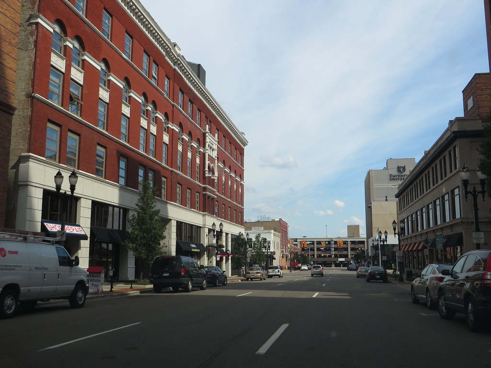
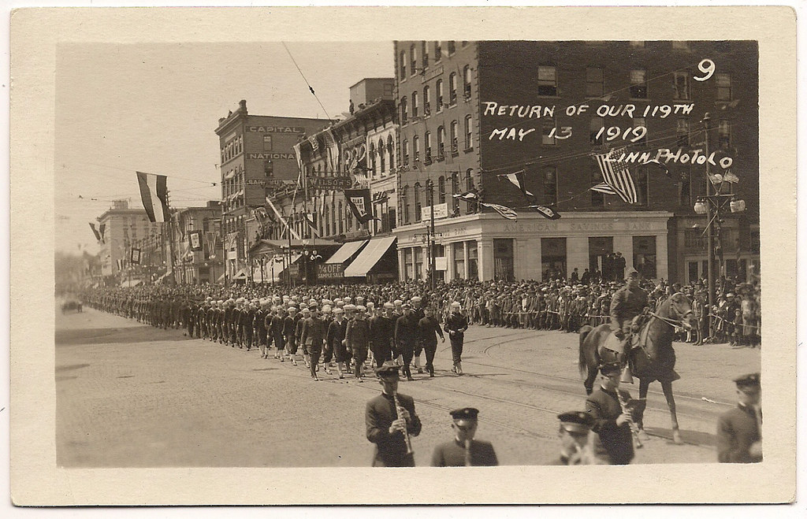
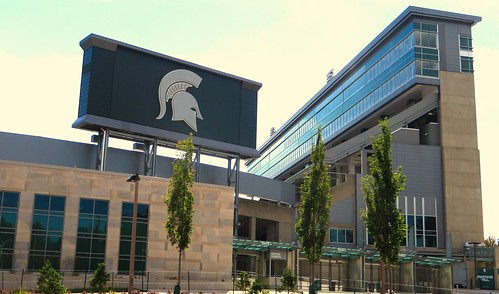

The Capital of Michigan, Located in Ingham County and positioned on the banks of Grand River. Well known as the cultural and historically rich city. Home to the Michigan Historical Museum and The Potter Park zoo, as well as many theaters, trails and festivals. There's plenty to do and see in the state capital!
As of July 1, 2022, the population of lansing is estimated to be around 112,537. The 6th most populated city in Michigan. Lansing has managed to maintain a relatively low population decline rate, It's potential for growth is positive based off the many businesses and ammenities added.
Lansing was settled in 1847 as the capital of Michigan, but wasn't officially incorporated until 1859, that was after the city's population began to grow to a few thousand residents.
Located in Ingham County, although some of Lansing stretches into Eaton and clinton county. Lansing is the central location in the southern peninsula of Michigan and positioned on the banks of Grand River.Source
Lansing is primarily classified as urban, based off the county ington in resides in, but some of lansing crosses into Eaton county, which would be considered more rural. *sourced from the U.S Census Bureau
The Median household income in Lansing as of 2021 is around $46,570, which is about around 30% less than the median income of the state of Michigan as a whole, which is around $63,302. *sourced from the U.S Census Bureau